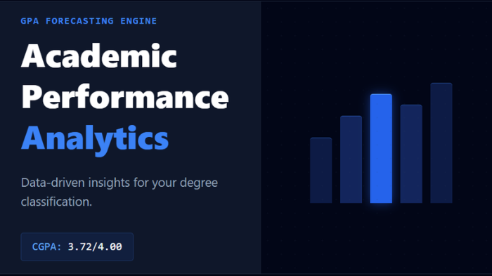
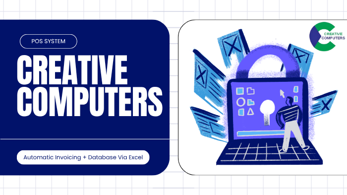
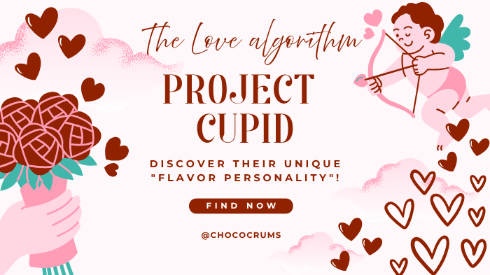

NOV 2026 — PRESENT
INTERNSHIP
Python Programming Intern
Datheon
Building practical programming experience through an internship focused on Python.
DATA SCIENCE UNDERGRADUATE · SRI LANKA
I'm Lochana Karunarathna — learning how data, economics and technology can help us understand the world and solve meaningful problems.
Data Science • Economics • Markets
A LITTLE ABOUT ME
I'm an undergraduate studying Data Science at the Sabaragamuwa University of Sri Lanka.
I'm at the beginning of my journey in data science, building my foundations through university, hands-on projects and consistent self-learning. I'm especially interested in the connection between data, economics and financial markets — and in making complex ideas easier to understand.
Outside my studies, I've explored entrepreneurship, digital services and content creation. I share what I learn so that other students can learn alongside me.
More about my journeyAREAS I'M EXPLORING
Python, statistics, data analysis and machine learning foundations.
Using data to explore economic trends and Sri Lanka's capital market.
Sharing lessons, projects and resources with a growing learner community.
TOOLS & FOUNDATIONS
A growing toolkit. I focus on learning the fundamentals and applying them through practical work.
THE JOURNEY SO FAR
INTERNSHIP
Datheon
Building practical programming experience through an internship focused on Python.
EDUCATION
Sabaragamuwa University of Sri Lanka
Undergraduate journey focused on data, statistics, computing and analytical problem-solving.
INTERNSHIP
LOLC Finance PLC
Supported customers with digital financial services and iPay adoption; recognized for digital service excellence.
ENTREPRENEURSHIP
Choco Crums
Helped build a handmade cake business, exploring operations, customer experience and marketing.
TRAINEE ROLE
Creative Computers
Built an Excel/VBA invoicing workflow that reduced invoice processing time by 60%, based on the original project record.
SELECTED WORK
Small steps, practical problems and lessons learned along the way.

A simple web application designed to help students track academic performance and calculate GPA.
View live project
An Excel/VBA-based invoicing workflow built to generate invoices, calculate totals and track payments.
View project
A low-code experiment that personalizes cake choices and generates instant reports.
Explore experimentMore data-focused projects will be added as I build them during my degree.
LET'S CONNECT
Open to learning opportunities, collaborations, internships and conversations about data, economics and technology.
lochana.contact@gmail.com